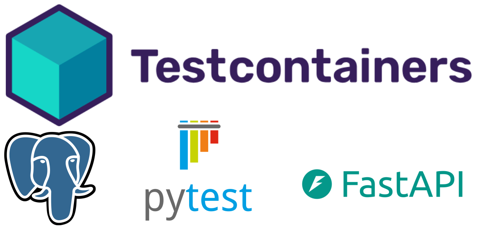

Testcontainers with FastAPI and asyncpg

When I first got to know about testcontainers, I wanted to learn how to integrate it with asyncpg, an asynchronous driver for PostgreSQL, for testing asynchronous routes in FastAPI. In an initial reference search, I found this article by Guilherme, and based on his article, I decided to write this example application.
You can check the complete repository here.
TL;DR: The full conftest.py setup is available here.
Testcontainers
Testcontainers is an open-source library for providing lightweight instances of anything that can run in a Docker container. It was originally implemented for .NET, Go, Java, and Node.js but has since been extended to other programming languages through community projects, including Python: testcontainer-python.
Below is a documentation example of how to use an instance of PostgreSQL, which uses psycopg2 as the default driver.
>>> from testcontainers.postgres import PostgresContainer
>>> import sqlalchemy
>>> with PostgresContainer("postgres:16") as postgres:
... psql_url = postgres.get_connection_url()
... engine = sqlalchemy.create_engine(psql_url)
... with engine.begin() as connection:
... version, = connection.execute(sqlalchemy.text("SELECT version()")).fetchone()
>>> version
'PostgreSQL 16...'
Context
The objective of this repository is to test asynchronous FastAPI endpoints using PostgreSQL as a database. To achieve that, besides the testcontainers, it uses pytest and anyio, which provides built-in support for testing applications in the form of a pytest plugin. The choice of anyio over pytest-asyncio is because FastAPI is based on Starlette, which uses AnyIO, so we don't need to install an additional package here.
The development of the API routes uses aiosqlite, the async driver for SQLite.
Below are all the dependencies used to run the example.
aiosqlite>=0.20.0
asyncpg>=0.30.0
fastapi[standard]>=0.115.6
pytest>=8.3.4
sqlalchemy>=2.0.36
testcontainers>=4.8.2
The repository README contains all the steps to run it locally using uv.
Below is how the example is structured:
.
├── src # (1)
│ ├── app.py
│ ├── database.py
│ ├── models.py
│ └── schemas.py
└── tests
├── conftest.py # (2)
└── test_routes.py
- Where the example API is written using FastAPI.
- Where API test fixtures are written, from the PostgreSQL instance to the client. You can learn more about the
conftest.pyfile in the pytest docs.
API routes implementation
This section will show the endpoints created for later tests. For this example, three simple routes were created to simulate a ticketing sell system:
GET /tickets/all- To list all the available ticketsPOST /tickets/create- To create a new ticket to sellPOST /tickets/buy- To buy an available ticket to sell
In the database, besides the id field, the ticket table has: a price field, a boolean field is_sold to identify if it's sold or not, and a sold_to field to identify who the ticket was sold to. The models.py file contains this information, using the SQLAlchemy ORM.
The database.py contains the database connection, as well as the get_session() generator, responsible for creating asynchronous sessions to perform transactions in the database.
The last file before creating the routes is the schemas.py, which will contain all the Pydantic models.
The previous three files are imported in app.py, which contains the API routes for this example. As mentioned earlier, although the objective is to test the endpoints with a PostgreSQL database, the development of the API uses SQLite to avoid the need for a PostgreSQL instance running constantly.
To keep things simple and avoid database migrations, the database creation is handled using lifespan events. This guarantees that every time we run the application, a database will be created if it doesn't already exist.
Below are the route implementations, as well as the SessionDep to be used as dependency injection in each route.
Now, by running the command below in the terminal, the application should be available at http://127.0.0.1:8000.
Tests workflow
To use PostgreSQL in the tests, the testcontainer will be set up in conftest.py, along with the database session and the client required to test the endpoints.
Below is a simple diagram illustrating how it works for each test, where each block represents a different function.
flowchart LR
%% Nodes for fixtures
postgres_container["postgres_container"]
async_session["async_session"]
async_client["async_client"]
test["Test"]
%% Subgraph for dependencies
subgraph Fixtures in conftest.py
direction LR
postgres_container --> async_session
async_session --> async_client
end
%% Arrows from async_client to test blocks
async_client --> test
async_session --> test
%% Style the nodes with rounded corners
classDef fixtureStyle rx:10, ry:10;
%% Style the nodes
class postgres_container,async_session,async_client,test fixtureStyle;The postgres_container will be passed to async_session, which will be used in both async_client and directly in the tests, in cases where we need to transact directly with the database.
Creating the test fixtures
The first fixture inserted in conftest.py is the anyio_backend, highlighted in the code below. This function will be used in postgres_container and marked for the AnyIO pytest plugin, as well as setting asyncio as the backend to run the tests. This function was not included in the previous diagram because it is an AnyIO specification. You can check more details about it here.
Now, in the postgres_container, the anyio_backend is passed, and all the tests that use the postgres_container as a fixture at any level will be marked to run asynchronously.
Below is the postgres_container function, which will be responsible for creating the PostgresContainer instance from testcontainers. The asyncpg driver is passed as an argument to specify that it will be the driver used.
| tests/conftest.py | |
|---|---|
The async_session takes the connection URL from the PostgresContainer object returned by the postgres_container function and uses it to create the tables inside the database, as well as the session that will handle all interactions with the PostgreSQL instance created. The function will return and persist a session to be used, and then restore the database for the next test by deleting the tables.
The last fixture is the async_client function, which will create the AsyncClient, directly imported from HTTPX, and provide it to make requests to our endpoints. Here, the session provided by async_session will override the session originally used in our app as a dependency injection while the client is being used.
Running the tests
With all the test fixtures created, it's now possible to write and run the tests.
Below are the test examples for the GET /tickets/all. The first one inserts 3 records in the table using the async_session and then asserts if the response has a 200 status and the list returned has a length of 3. The second one tests the case where there are no records yet in the database, as the response must return a 200 status and an empty list.
In total there are 6 test, and the rest of them has the same logic. Their full implementations can be checked in the repository.
Adding the following setting in pyproject.toml or pytest.ini will inform pytest to add the root directory to the Python search path when running tests.
Now, if we run the following command in the terminal...
...we will see something similar to this:
tests/test_routes.py::test_get_all_tickets_success PASSED [ 16%]
tests/test_routes.py::test_get_all_tickets_when_empty PASSED [ 33%]
tests/test_routes.py::test_create_ticket_success PASSED [ 50%]
tests/test_routes.py::test_buy_ticket_success PASSED [ 66%]
tests/test_routes.py::test_buy_ticket_when_ticket_not_found PASSED [ 83%]
tests/test_routes.py::test_buy_ticket_when_already_sold PASSED [100%]
============================================= 6 passed in 12.31s =============================================
Although all the tests are very simple, it took an average of more than two seconds for each one of them to execute. This happens because for each test, a new PostgreSQL Docker instance is being created, as shown in Tests workflow.
To make the tests faster, one option is to create just one PostgreSQL Docker instance and use it for all the tests by configuring the @pytest.fixture(scope='').
The pytest fixture scope
Fixtures requiring network access depend on connectivity and are usually time-expensive to create. By setting the scope in @pytest.fixture, we can tell pytest how to manage the fixture's creation and reuse.
Fixtures are created when first requested by a test and are destroyed based on their scope. Some of the scope options that can be set are:
function: the default scope, the fixture is destroyed at the end of the test.class: the fixture is destroyed during the teardown of the last test in the class.module: the fixture is destroyed during the teardown of the last test in the module.package: the fixture is destroyed during the teardown of the last test in the package.session: the fixture is destroyed at the end of the test session.
As we want to create just one Docker instance and reuse it for all the tests, we changed the @pytest.fixture in the conftest.py file in the following highlighted lines.
Now, every time we run the tests, we will follow a workflow similar to the one below, where the postgres_container fixture is created only once at the beginning of the test session and is reused in all other fixtures. The async_session and async_client fixtures are still created and destroyed for each test. The postgres_container fixture is destroyed only after all the tests have finished.
flowchart LR
%% Nodes for fixtures
postgres_container["postgres_container"]
async_session["async_session"]
async_client["async_client"]
test["Test 1"]
async_session_2["async_session"]
async_client_2["async_client"]
test_2["Test 2"]
async_session_n["async_session"]
async_client_n["async_client"]
test_n["Test N"]
subgraph All fixtures
direction LR
subgraph Function fixtures
direction LR
async_session --> async_client
async_session_2 --> async_client_2
async_session_n --> async_client_n
end
subgraph Session Fixture
direction LR
postgres_container --> async_session
postgres_container --> async_session_2
postgres_container --> async_session_n
end
end
%% Arrows from async_client to test blocks
async_client --> test
async_session --> test
async_client_2 --> test_2
async_session_2 --> test_2
async_client_n --> test_n
async_session_n --> test_n
%% Style the nodes with rounded corners
classDef fixtureStyle rx:10, ry:10;
%% Style the nodes
class postgres_container,async_session,async_client,test fixtureStyle;
class async_session_2,async_client_2,test_2 fixtureStyle;
class async_session_n,async_client_n,test_n fixtureStyle;Running the tests again, we should observe that the total time to run all tests decreases to around 4 seconds, with a median of less than one second per test.
tests/test_routes.py::test_get_all_tickets_success PASSED [ 16%]
tests/test_routes.py::test_get_all_tickets_when_empty PASSED [ 33%]
tests/test_routes.py::test_create_ticket_success PASSED [ 50%]
tests/test_routes.py::test_buy_ticket_success PASSED [ 66%]
tests/test_routes.py::test_buy_ticket_when_ticket_not_found PASSED [ 83%]
tests/test_routes.py::test_buy_ticket_when_already_sold PASSED [100%]
============================================= 6 passed in 3.94s =============================================
Documentation reference links
Final version of test fixtures
The final conftest.py is presented below: